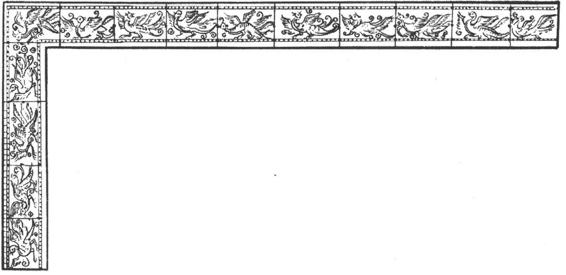

三国政权是在东汉末年战乱中建立起来的。至西晋仅有短暂的统一，不久发生“八王之乱”。西晋灭亡后，北方进入“十六国”时期。南方以建康为中心建立东晋。这是一个战乱不断，社会处于分裂状态的时代。这期间少见史书系统记述有关度量衡管理、使用情况。流传下来的器物也比前大为减少。史书中在讨论三国至隋这一段时期度量衡时，大多与秦汉时期作比较，称“古制”。三国、两晋度量衡单位量值却是东汉的延续。
三国、两晋尺度，可以从《晋书·律历志》和《隋书·律历志》中看到其发展、变化的过程，以及日常用尺和天文、乐律用尺之间的关系。再佐以近年所见出土的各种尺，可以得到较为可信的尺度单位量值。
古籍中考校历代尺度，最初见于《晋书·律历志》，其后《隋书·律历志》更遍搜汉至隋有关尺度的文献及实物，前后达17个朝代，古尺27种，依尺之长短，分别其异同，列为15等，皆以第一等“周尺”（实为新莽铜斛尺）为标准，精测细校至毫厘，得此间尺度之变化。《晋志》、《隋志》皆出自李淳风之手，以二《志》互为参校、互为补充，为我们研究、了解三国至隋历代尺度变迁提供了可靠的文献资料。
十五等尺中，有关魏、晋之尺共五支，其中以魏时杜夔尺和西晋时荀勖尺最有代表性。《隋志》首先对秦至魏晋时尺作了简要的论述：“及秦氏灭学。……汉室初兴，丞相张苍，首言音律，未能审备。……及王莽之际，考论音律，刘歆条奏，班固因《志》之。……炎历将终，而天下大乱，乐工散亡，器法湮灭。魏武始获杜夔，使定音律，夔依当时尺度，权备典章。及晋武受命，遵而不革。至泰始十年，光禄大夫荀勖，奏造新度，更铸律吕。”［72］杜夔在曹魏时任雅乐郎，定魏尺的时间当在东汉末。由于“乐工散亡，器法湮灭”。不得不以东汉末至曹魏时民间日常用尺定律。十五等尺中第五等魏尺“杜夔所用调律，比晋前尺一尺四分七厘”［73］。
晋初立，沿用魏时杜夔尺。至武帝泰始十年，司马炎又命荀勖考校古律以定尺度。勖博学明识，精通乐律。奉命考校晋之乐律及尺时，发现“八音不和”，遍寻古器七种，反复揆校古、今乐律，“始知后汉至魏，尺长于古四分有余”。勖乃“依周礼制尺，所谓古尺也”以勖尺量古器，竟“尺寸无差”。［74］故李淳风列15等尺时，在第一等周尺之中，将荀勖律尺与王莽铜斛尺并列，荀勖校律尺，时在西晋前期，又名“晋前尺”。杜夔尺是当时日常用尺，又称“今尺”。二者尺度之比，即魏尺“比晋前尺一尺四分七厘”［75］。晋前尺与莽尺同长，合今23.1厘米，故魏尺长24.186厘米。
荀勖考古律尺，以《汉书·律历志》黄钟律定度量衡为依据，所得尺之长与莽尺正合。但荀勖律尺却并未成为西晋时官民日常用尺，仅仅用于调钟律，即《晋志》所云：“荀勖新尺，惟以调音律，至于人间未甚流布。”［76］而杜夔尺“自此迄晋，用相因循”。又云：“夔依当时尺度，权备典章。及晋武受命，遵而不革。”［77］实际上晋时仍沿用的是魏尺。另一方面，由于古人又多尊《周礼》及典籍古训，恪守“律不可变”的信念。凡遇改朝换代，必寻古音，定古律，也就必求古尺为定律之准。然而律与度皆不可言传书载，累黍定尺又会因黍之大小不同难以定准。以致历代常为以尺定律或以律求尺而争论不休，魏晋已始。至于度量衡量值的变化，原因十分复杂，一般情况下往往在朝代更迭之时，对前朝某些因袭增讹而积渐之量值予以承认，并以法制确立下来即可，并没有千载不变之必要。东汉至晋，尺度实际已有所增长，官民又早已习用，也就完全没有再回复到所谓“古制”的必要了。这正是荀勖尺虽合“古”制却未及使用的原因。
近年来所见三国两晋尺共15支，皆为出土文物。出土地区分散，尺的质地也不同，有铜、铁、骨、木等各种，每一支尺长度虽不完全相同，却多在24厘米左右，与文献互为参校，可厘定一尺之值为24.2厘米。
这期间的量器及权衡器皆未见实物遗存，文献也少见记述。惟《晋书·律历志》据刘徽注《九章商功》将魏时大司农斛与新嘉量斛作了比较。《晋志》云：“魏陈留王景元四年，刘徽注《九章商功》曰：‘当今大司农斛，圆径一尺三寸五分五厘，深一尺。积一千四百四十一寸十分寸之三。王莽铜斛，于今尺为深九寸五分五厘，径一尺三寸六分八厘七毫。以徽术计之，于今斛为容九斗七升四合有奇。’魏斛大而尺长，王莽斛小而尺短。”［78］文中说明魏尺与莽尺之比是1:0955，已知莽尺长23.1厘米，则魏尺长24.188厘米，正与杜夔尺同长。今以徽术计算，得魏斛的容积为20396.4立方厘米，莽斛的容积19874.2立方厘米。［79］魏斛比莽斛大2.6%。二斛之比正如刘徽所说1:0974即莽斛合魏斛的“九斗七升四合有奇。”刘徽以魏斛比莽斛，是从计算的角度出发，以计算之精确为目的，并非以此证明汉魏度量衡的变迁。因为受古代铸造技术所限，量器的实际误差一般都在5%左右。故刘徽所得此魏斛比彼莽斛大2%有余。正说明魏之容量继承秦汉旧制。故暂厘定魏时一升仍为200毫升。
迄今未见可供考证两晋容量制度的实物和文献资料。但从隋代统一度量衡时对“古制”的界定来分析，两晋容量继承汉制有一定的可信度，也仍以每升200毫升厘定之。
三国两晋涉及权衡器的资料更是极为少见。几件刻有自重的铜器，可比性不大，皆不足为证。亦因晋以后至隋唐，皆以“古制”及南朝梁、陈比隋唐制。（图16—20）故可反证此期间权衡制及单位量值沿袭东汉之制，即每斤约合220克。

图16-20 南朝梁凤纹铜矩尺线图